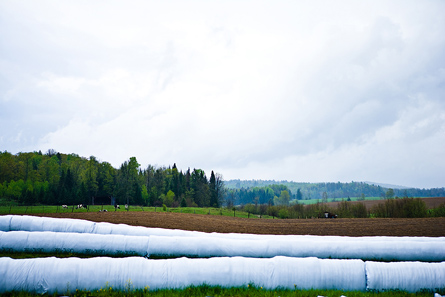

Module 8—Acid-Base Equilibrium
Big Picture

© 2008 Jupiterimages Corporation
Soil is often overlooked when we think of important parts of Earth. In earlier science courses you learned that soil is a component of the biosphere, the section of Earth that supports life. Apart from being the medium for growing most plants, soil is the home for many organisms. Soil is also made up of many chemical components. The minerals, organic materials, and water within soil form a complex chemical system.
The atmosphere also forms a system in which equilibria can exist. How might these equilibria affect the rain and other forms of precipitation that will deposit on Earth?
In Module 7 you learned that certain combinations of chemicals can form an equilibrium system. You also learned that equilibrium systems exhibit certain unique properties that can be manipulated by the application of a stress.
What kinds of stresses are placed on soil? Does human activity or agricultural practice affect the equilibrium of chemical components in soil? How would the chemical components in soil respond to the application of a stress, and what impact might that stress have on soil’s fertility?
Soil is not the only system that has chemical components that form an equilibrium system. In this module you will also investigate the components within biological systems that make up equilibrium systems within organisms.
 Assessment in This Module
Assessment in This Module
Each lesson contains a range of activities and assessment options. These include assignments, labs, and Self-Check, Try This, Discuss, Reflect and Connect, and Reflect on the Big Picture activities. Instructions will be provided for each of these activities so that you can appropriately focus your time and effort. Your teacher will tell you which assessment options to complete and which responses to submit for marks or feedback. Remember to save all of your work in your Chemistry 30 folder.
In the Module 8 Assessment you will consider the construction of the Table of Relative Strengths of Acids and Bases, which you will use throughout this module. You may wish to look at the Module Assessment and the Unit Assessment before starting Lesson 1.